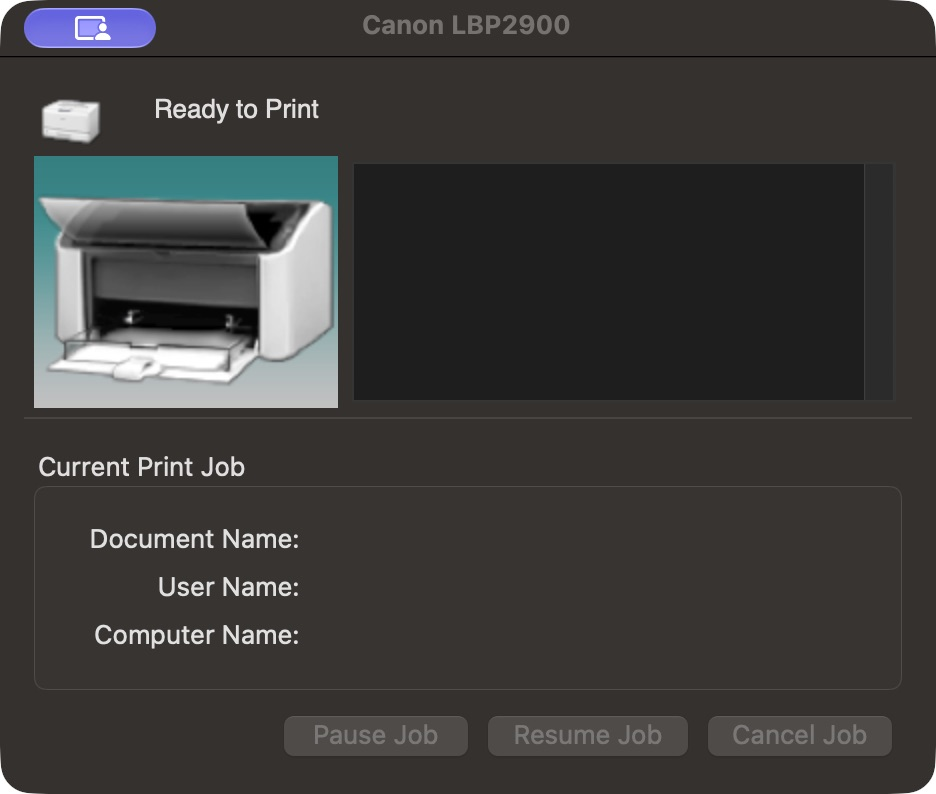
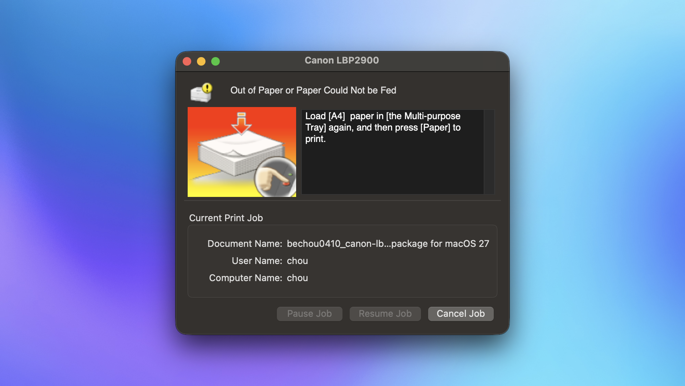
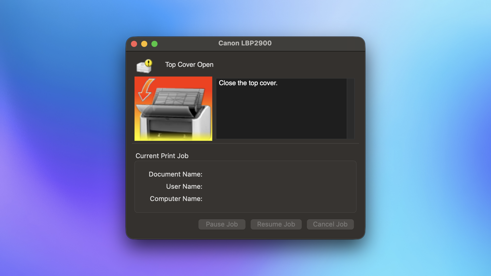
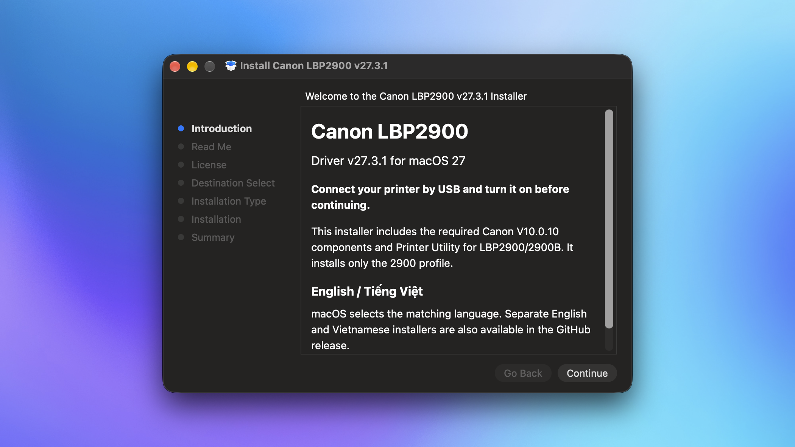

Một dự án nhỏ cho chiếc máy in bền bỉ
LBP2900 còn in tốt mà. Cho em ấy thêm một đời Mac.
Driver cộng đồng cho macOS 27, có Canon Printer Utility và các tùy chọn in quen thuộc. Cắm máy vào, cài driver, rồi in tiếp thôi.
… lượt tải
Đã thử với LBP2900 · Apple silicon · macOS 27.2

Đi một vòng nha
Máy báo gì, mình biết nấy.
Không phải đoán xem máy đang giận dỗi hay chỉ đang chờ giấy.


Cắm và bật máy in
Kết nối một chiếc LBP2900 qua USB trước khi mở bộ cài.
Mở bộ cài
Làm theo Installer và xác thực quyền quản trị trên Mac.
Chọn máy, in thôi
Mở Canon LBP2900 trong Printers & Scanners rồi chọn Open Printer Utility.

Trước khi bấm tải
Hỏi nhanh, đáp thật.
Driver này đã thử trên máy nào?
Đã thử trực tiếp với Canon LBP2900, Mac Apple silicon và macOS 27.2. LBP2900B, Mac Intel và macOS 26 chưa được kiểm tra.
Có giữ Canon Printer Utility không?
Có. Gói cài mang theo Utility và các tùy chọn in Canon dành cho LBP2900. Sau khi job được chuyển cho dịch vụ Canon, dùng Utility để xem trạng thái và điều khiển job.
macOS hiện cảnh báo bộ cài, phải làm sao?
Bộ cài chưa có Developer ID và chưa được Apple notarize. Hãy đối chiếu checksum rồi làm theo hướng dẫn mở bộ cài trong README; không cần tắt Gatekeeper hay SIP toàn hệ thống.
Đây có phải driver chính thức của Canon không?
Không. Đây là dự án cộng đồng, dựa trên các thành phần Canon V10.0.10 và không được Canon hay Apple chứng nhận.
Gửi lời chào tới em máy in cũ